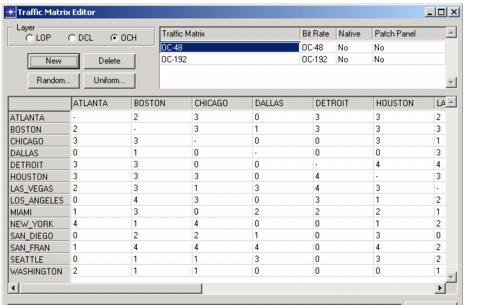

Creating a Baseline Scenario > Creating Network Traffic > Creating a Traffic Matrix
Creating a Traffic Matrix
After you create a baseline topology, you must create one or more traffic matrices. A traffic matrix specifies the amount of traffic between each node in the topology. Most design operations (such as routing or dimensioning) require a traffic matrix; SP Guru Transport Planner views the matrix as a traffic demand forecast and configures the network to meet this forecast.
Every traffic flow in a traffic matrix is bidirectional and symmetrical: the amount of traffic between two nodes is always equal in both directions.
Procedure 3-7 Creating a Traffic Matrix
- Create a baseline topology with all nodes and links that you want to populate with traffic.
- Choose Network > Traffic Matrix Editor.
The Traffic Matrix Editor (shown in the following diagram) appears.
Figure 3-23 Traffic Matrix Editor

- Choose Layer to select the layer (LOP, DCL, or OCH) of the traffic matrix you want to create. The nodes that appear in the Selected Matrix depend on this setting: OCH matrices contain all OCC and EOCC nodes, LOP and DCL matrices contain all ECC and EOCC nodes.
LOP, DCL, and OCH matrices represent different traffic demands at different layers: SONET/SDH lower-order demands at the LOP layer, SONET/SDH higher-order traffic demands at the DCL layer, and optical-wavelength demands at the OCH layer. The following points summarize the differences and similarities between these matrix types:
- You can groom LOP traffic to DCL traffic. You cannot run a routing or dimensioning operation directly on LOP traffic; you need to translate it to DCL traffic first.For more information, see Grooming LOP to DCL Traffic .
- You can run a routing operation with either a DCL or an OCH traffic matrix. Routing affects only the used capacity at the layer (DCL or OCH) at which the routing took place. For more information, see Routing .
- You can only run a dimensioning operation with a DCL traffic matrix in a network that contains ECC nodes (no OCC or EOCC nodes) or with an OCH traffic matrix. For more information, see Dimensioning .
- You can run a grooming operation with a DCL matrix only. For more information, see Grooming DCL to OCH Traffic .
- You can set the Native check box for DCL/OCH traffic. The option is set by default.
A connection is called native if it affects only the layer on which it is defined. A non-native connection is trailed towards the higher layer and becomes a link at that layer.
A native OCH connection represents pure optical traffic; a non-native OCH connection represents optical traffic that can support SONET/SDH traffic. Hence a non-native OCH connection becomes a logical link at the DCL layer.
You can also define native and non-native DCL traffic. A non-native DCL connection is trailed towards the LOP layer. LOP traffic is always native, since this is the top layer in the hierarchy.
- If you want to rename the matrix, double-click the current name, enter a new name, and press Enter.
- Specify the Bit Rate of the matrix.
- Click either Random (to specify varying traffic levels between nodes) or Uniform (to specify a uniform traffic level for every pair of nodes).
- Specify the level of traffic you want in the resulting dialogue box, then click OK to return to the Traffic Matrix Editor.
The Selected Matrix table fills with integer values. These values specify the number of bidirectional wavelength demands (OCH layer) or bidirectional time slots (LOP or DCL layer) at the specified bit rate.
- Click New to create another traffic matrix, or OK to close the Traffic Matrix Editor and accept your changes.
Note—After you set up a traffic matrix, you cannot change it in the Traffic Matrix Editor. A message below the matrix warns that it cannot be renamed, deleted, or modified. To change the traffic matrix, you must apply the Tear Down operation first. See Routing for more information about setting up and tearing down traffic matrices.
End of Procedure 3-7
Note—Besides defining traffic manually via the traffic matrix editor, you can also import traffic, as a traffic matrix or as a list of connections. For more information, see Traffic Matrix Data Files and Connection List Data Files.
| Home © 1987-2007 OPNET Technologies, Inc. All Rights Reserved. This software may be covered by one or more U.S. Patents. See complete patent notice in the Legal Notices section. OPNET Support Center |